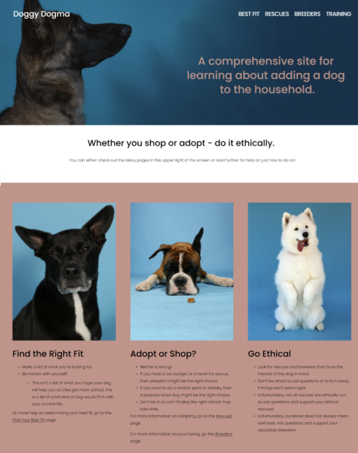
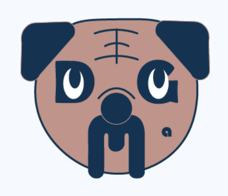

Project 1 - Membership Standard Operating Procedures
Before the introduction of uniform Standard Operating Procedure (SOP) sites, information for various departments was listed in multiple places and on various platforms. Along with poor functionality, this made finding information difficult—particularly in the fast-paced environment of a call center. The SOPs were created as a way to combat these issues.
The Membership SOPs were one of the Content team’s first undertakings in pulling together information from various sources in order to create this site. A teammate and I undertook the task of compiling information, talking to subject matter experts (SMEs), and designing a website that would be easy to use while multi-tasking.
Reflection
For the Membership SOPs, my teammate and I had to select strategies and delivery methods for designing in a fast-paced learning environment of the call center. We pulled material from any database possible this included the intranet, SMEs, knowledge base, learning aids, and more. In the beginning, it was difficult finding the best way to organize information and create an easy-to-use method. Once we found how we wanted to do this, things went much faster. It was very rewarding seeing senior employees who had been against the change, appreciate the value of the SOP.
Project 2 - Costco Customer Service Website
The customer service site had long been neglected. This made the customer service site look like an entirely different page from the main site and caused many users to immediately search for a phone number rather than for an answer. The stakeholders’ direction left a lot of room for creativity and ideas.
After discussing and coming up with a list of what the Content team wanted to see changed, our team researched and came up with a lists of must-haves, nice-to-haves, and things we didn’t want to include. From here, I began to compile our list into various prototypes in order to specify what would best fulfill the end goal of increasing usability to decrease call volume.
Reflection
This project included learning and applying UX design to create an effective design for users. The most difficult part of ths project was the lack of data to work with. We had to use common complaints from members and call center agents to guide our decisions. It was rewarding, working with so many teams within Costco to develop the design and I really enjoyed creating the icons. If I could have changed anything, it would have been starting with a mobile-first design.
Project 3 - Doggy Dogma Website
Working as a dog trainer and volunteering for a rescue, I meet and hear of many people who didn’t realize what they were getting into when they purchased their puppy or rescued their dog.This background helped me form goals. I approached it with the question, what would I want to impart on someone before they added a dog to their household? This helped me format the flow of the website as well as some topics that I was particularly passionate about and would like to share more information on for those who might be interested.
 Reflection
I used my knowledge of the dog industry (rescue, breeding, and training) to assess what users doing research might need to know. This informed my learning design of the website. Organizing the information on the website was difficult, but over a year later I am still happy with the flow and organization. I would like to make adjustments to make it easier to view on a mobile device, and I am hoping that I can do so as I learn HTML and CSS.